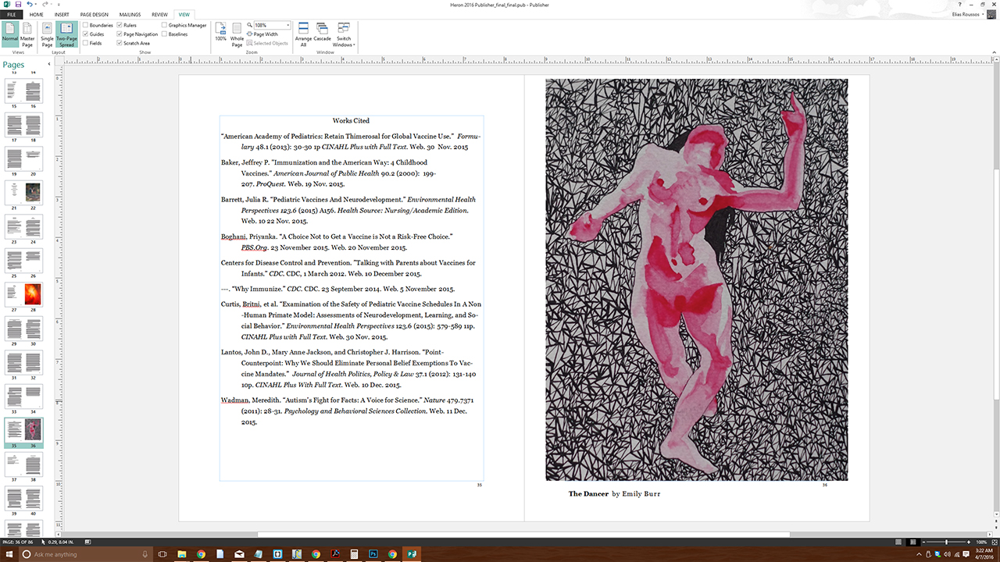

The Heron
What is it?
The Heron is an annual literary journal that focuses on the writing community at Great Bay Community College. Edited and aggregated by Great Bay students overseen by a faculty advisor, the Heron is a wholly student produced publication. For the Heron's sixth edition in the year 2016 I was offered opportunity to be co-editor of the Heron. Although already occupied with numeroud commitments, my interest in writing and design overruled my apprehension. I accepted readily, took a deep breath, and jumped straight in.
The Challenge
Prior to the Heron the only experience in editing that I had was from editing my own (and sometimes a peer's) papers for class assignments. I had never before edited another's story for any sort of published literature. Every aspect of this project was a learning experience for me.
As pieces were submitted to the Heron (and then to myself for review and editing) I learned quickly what my role was. I was to read through the pieces and fix grammatical errors and other mistakes of that ilk. It was not my job to question the artistic direction of the pieces, but rather to preserve that artistic direction for the enjoyment of others.
The Heron is a freely distributed internet journal. Click this link to download the sixth edition of the Heron for free.